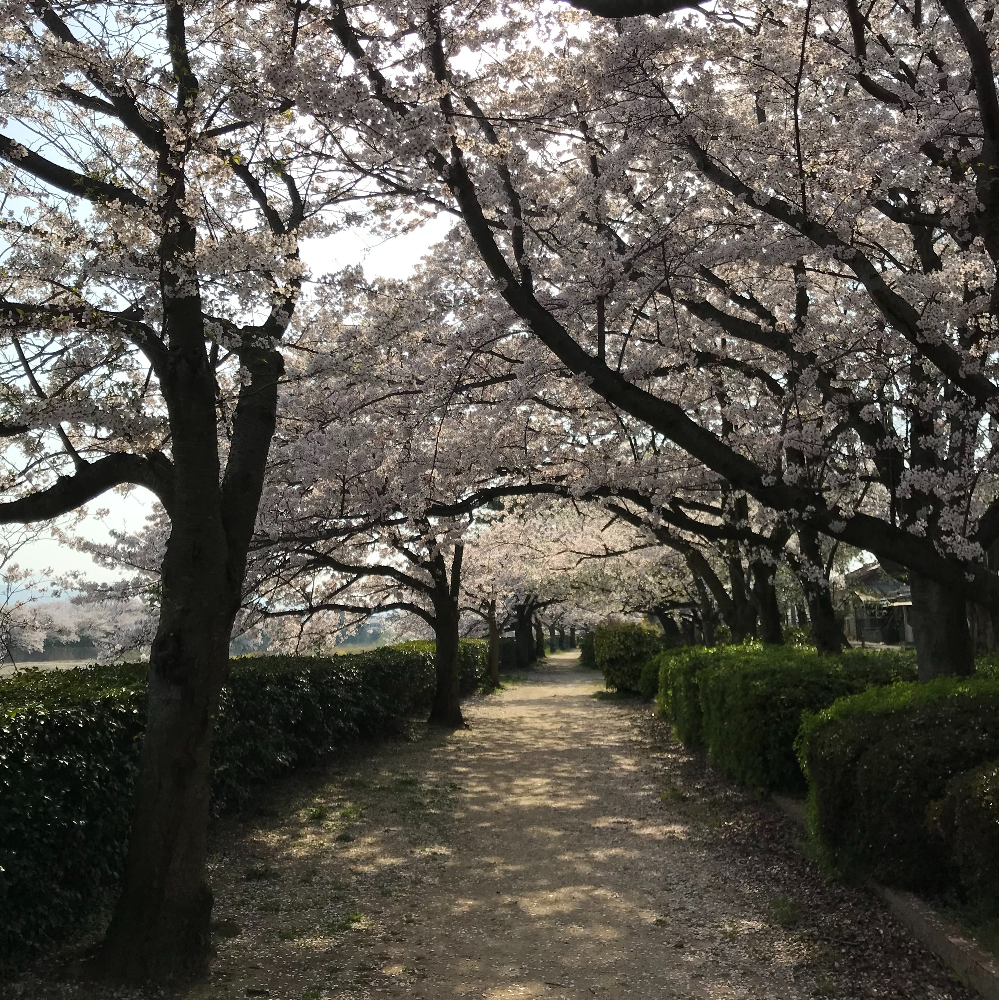
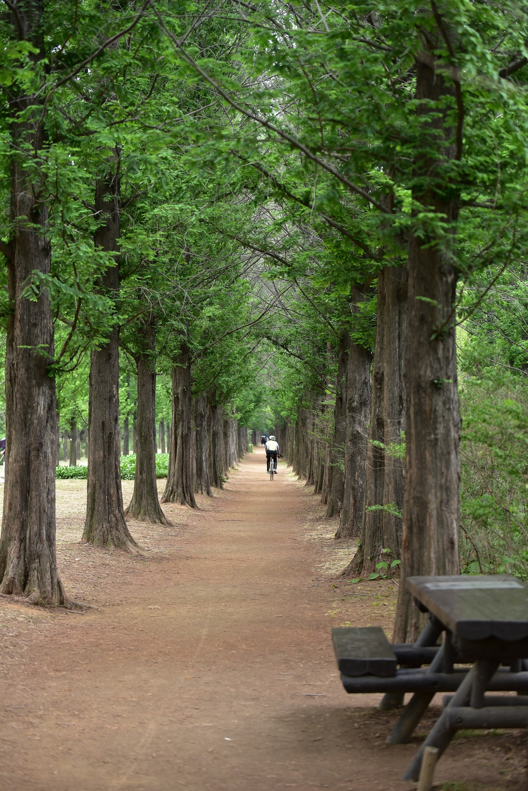
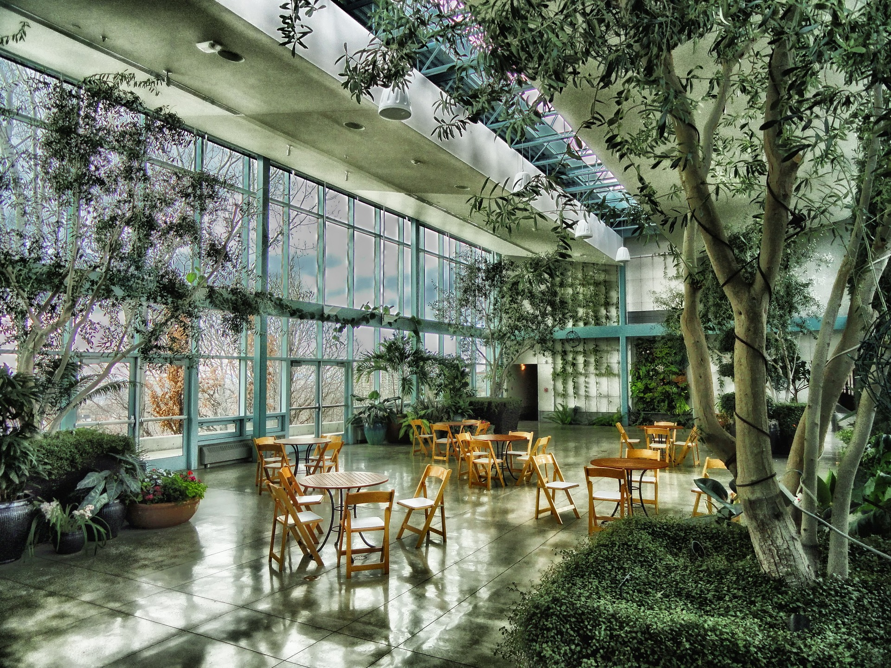
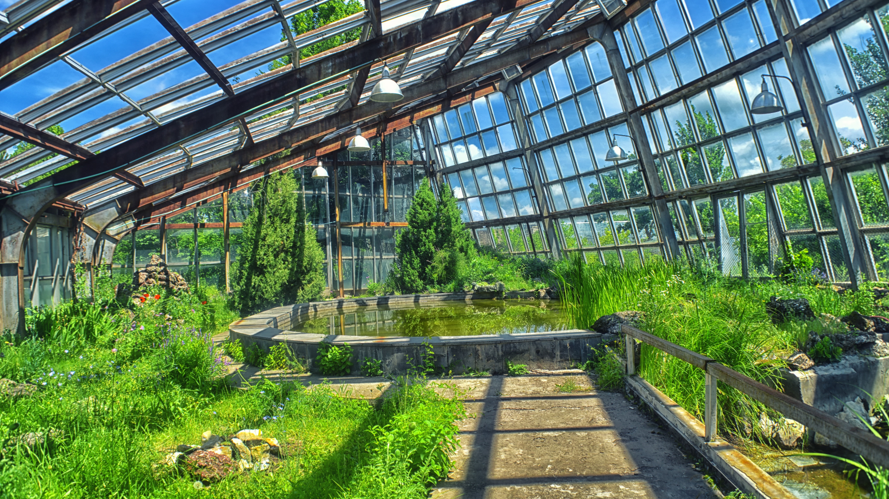
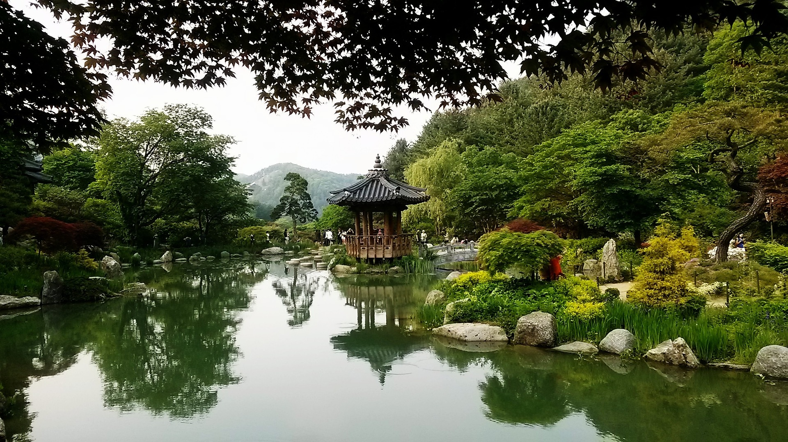
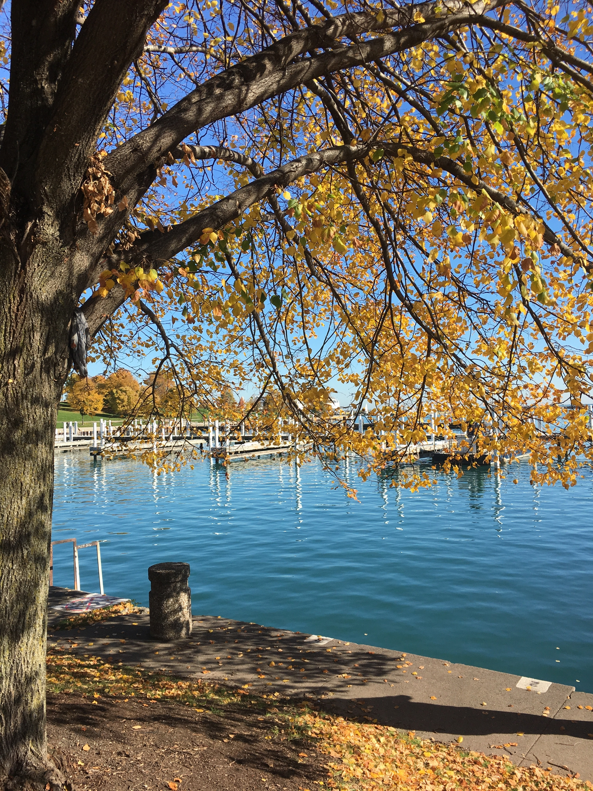

벚나무산책길
  벚나무산책길은 매년 4월 부터 5월까지
가을로 들어가는 계절에 가장 아름다운
정취를 느낄 수 있는 곳입니다.
이곳에는 산책길과 벚나무들이 어우러져
아름다운 전경을 이루고 있으며, 노을에는
다채로운 벚꽃이 환하게 피어나 이곳에서
당신은 멋진 산책로의 전경을 바라보며
즐거운 시간을 보낼 수 있습니다.
다양한 음식과 음료 등의 간식을 준비하여
수놓고 가까운 시간에 벚나무 산책로를
방문하여 걷기도 좋습니다. 가을로 들어가는
시기에 아름답고 멋진 산책길의 전경과
벚꽃의 황홀함을 느껴보세요!
식물관
 강남식물관은 식물원과 공원이 유기적으로
결합된 공원 속 식물원으로 지속가능한
녹색도시 강남의 미래상을 제시하고, 국내·외 기관과의
교환 및 증식을 통해 식물 8천종 이상 보유를 목표로
성장해 나아가고 있습니다.
더불어 멸종위기 야생식물 보호·복원·증식과
교육·홍보를 통해 생물다양성을 높이고 생태계
균형을 유지하여 사람과 야생 동식물이 공존
하는 환경을 확보해 나갈 계획입니다.
번식이 어려운 식물종의 증식과
식물유전자원 확보 및 교배를 통한
품종 개발 등 식물연구보전에도
많은 힘을 기울일 것입니다.
중앙광장


강남 중앙광장은 계절테마를 반영한
넓은 규모의 광장으로 쉼터, 공연, 모임 등
다양한 이벤트가 일어나는 곳입니다.
광장 중앙에는 공연이나 문화관련 행사등을
위한 행사/공연장이 마련되어 있으며
수준높은 예술공연과 다양한 축제의
한마당으로 풍성한 볼거리와 즐길거리를
제공하고 있습니다.
생태호수
 25,000㎡규모에 1,300여종 이상의
다양한 생물과 맹꽁이 등 멸종위기종이
서식하고 있는 도심 속 자연 생태호수의
면모를 보이고 있습니다.
그밖에 어린이들을 대상으로 한 풀꽃교실,
곤충교실 체험등의 생태호수 교육 프로그램을
진행하고 있으며 계절별 각종 야생화를
관찰 할 수 있고 호수에 대한 바른 이해와
자연의 소중함을 배울 수 있습니다.